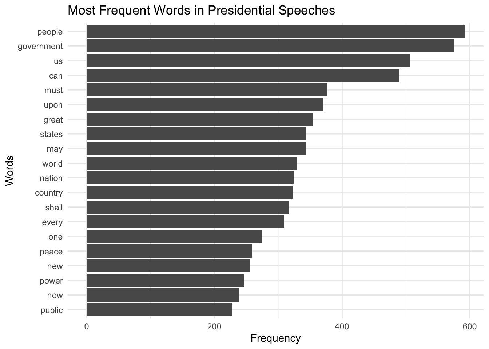
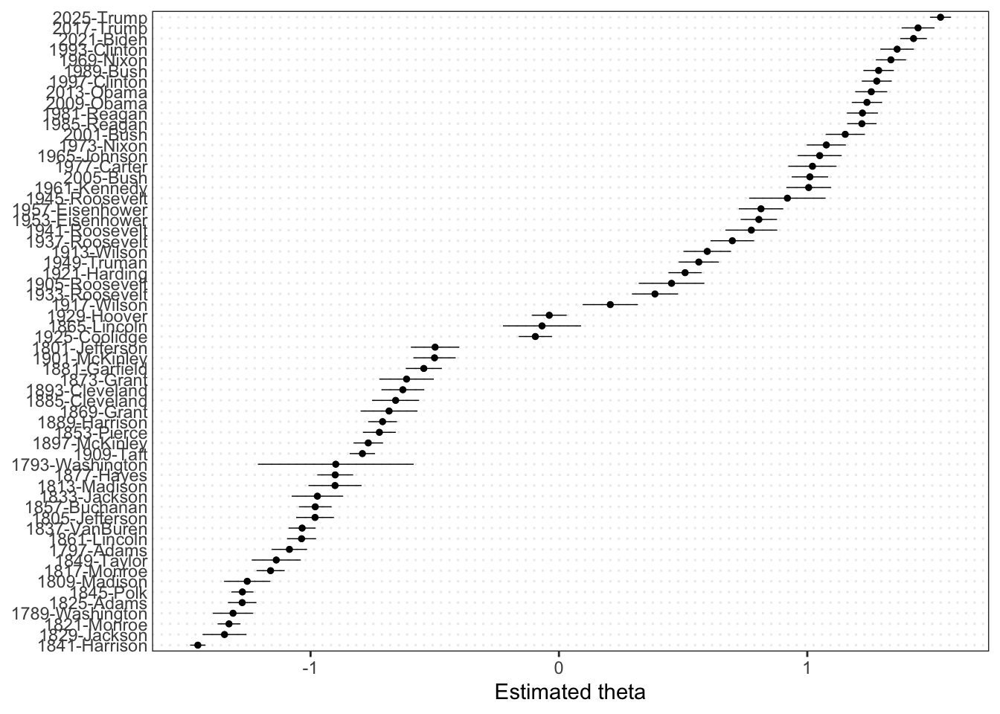

library(quanteda)
library(quanteda.textplots)
library(quanteda.textstats)
library(quanteda.textmodels)
library(ggplot2)Assignment 4 - Text Analytics using quanteda
1 Introduction
This assignment applies text analytics methods using the quanteda package in R. The purpose is to analyze political text data, identify similarities and differences across documents, and apply scaling techniques such as Wordfish to compare document positions.
Text analytics is increasingly important in political science, social science, and machine learning because it allows researchers to study large collections of documents systematically.
2 Load Required Packages
3 US Presidential Inaugural Speeches
The first part of the assignment analyzes U.S. presidential inaugural speeches included in quanteda.
4 Load the Corpus
data_corpus_inauguralCorpus consisting of 60 documents and 4 docvars.
1789-Washington :
"Fellow-Citizens of the Senate and of the House of Representa..."
1793-Washington :
"Fellow citizens, I am again called upon by the voice of my c..."
1797-Adams :
"When it was first perceived, in early times, that no middle ..."
1801-Jefferson :
"Friends and Fellow Citizens: Called upon to undertake the du..."
1805-Jefferson :
"Proceeding, fellow citizens, to that qualification which the..."
1809-Madison :
"Unwilling to depart from examples of the most revered author..."
[ reached max_ndoc ... 54 more documents ]5 Corpus Summary
summary(data_corpus_inaugural)Corpus consisting of 60 documents, showing 60 documents:
Text Types Tokens Sentences Year President FirstName
1789-Washington 625 1537 23 1789 Washington George
1793-Washington 96 147 4 1793 Washington George
1797-Adams 826 2577 37 1797 Adams John
1801-Jefferson 717 1923 41 1801 Jefferson Thomas
1805-Jefferson 804 2380 45 1805 Jefferson Thomas
1809-Madison 535 1261 21 1809 Madison James
1813-Madison 541 1302 33 1813 Madison James
1817-Monroe 1040 3677 121 1817 Monroe James
1821-Monroe 1259 4886 131 1821 Monroe James
1825-Adams 1003 3147 74 1825 Adams John Quincy
1829-Jackson 517 1208 25 1829 Jackson Andrew
1833-Jackson 499 1267 29 1833 Jackson Andrew
1837-VanBuren 1315 4158 95 1837 Van Buren Martin
1841-Harrison 1896 9125 210 1841 Harrison William Henry
1845-Polk 1334 5186 153 1845 Polk James Knox
1849-Taylor 496 1178 22 1849 Taylor Zachary
1853-Pierce 1165 3636 104 1853 Pierce Franklin
1857-Buchanan 945 3083 89 1857 Buchanan James
1861-Lincoln 1075 3999 135 1861 Lincoln Abraham
1865-Lincoln 360 775 26 1865 Lincoln Abraham
1869-Grant 485 1229 40 1869 Grant Ulysses S.
1873-Grant 552 1472 43 1873 Grant Ulysses S.
1877-Hayes 831 2707 59 1877 Hayes Rutherford B.
1881-Garfield 1021 3209 111 1881 Garfield James A.
1885-Cleveland 676 1816 44 1885 Cleveland Grover
1889-Harrison 1352 4721 157 1889 Harrison Benjamin
1893-Cleveland 821 2125 58 1893 Cleveland Grover
1897-McKinley 1232 4353 130 1897 McKinley William
1901-McKinley 854 2437 100 1901 McKinley William
1905-Roosevelt 404 1079 33 1905 Roosevelt Theodore
1909-Taft 1437 5821 158 1909 Taft William Howard
1913-Wilson 658 1882 68 1913 Wilson Woodrow
1917-Wilson 549 1652 59 1917 Wilson Woodrow
1921-Harding 1169 3719 148 1921 Harding Warren G.
1925-Coolidge 1220 4440 196 1925 Coolidge Calvin
1929-Hoover 1090 3860 158 1929 Hoover Herbert
1933-Roosevelt 743 2057 85 1933 Roosevelt Franklin D.
1937-Roosevelt 725 1989 96 1937 Roosevelt Franklin D.
1941-Roosevelt 526 1519 68 1941 Roosevelt Franklin D.
1945-Roosevelt 275 633 27 1945 Roosevelt Franklin D.
1949-Truman 781 2504 116 1949 Truman Harry S.
1953-Eisenhower 900 2743 119 1953 Eisenhower Dwight D.
1957-Eisenhower 621 1907 92 1957 Eisenhower Dwight D.
1961-Kennedy 566 1541 52 1961 Kennedy John F.
1965-Johnson 568 1710 93 1965 Johnson Lyndon Baines
1969-Nixon 743 2416 103 1969 Nixon Richard Milhous
1973-Nixon 544 1995 68 1973 Nixon Richard Milhous
1977-Carter 527 1370 52 1977 Carter Jimmy
1981-Reagan 902 2781 129 1981 Reagan Ronald
1985-Reagan 925 2909 123 1985 Reagan Ronald
1989-Bush 795 2674 141 1989 Bush George
1993-Clinton 642 1833 81 1993 Clinton Bill
1997-Clinton 773 2436 111 1997 Clinton Bill
2001-Bush 621 1806 97 2001 Bush George W.
2005-Bush 772 2312 99 2005 Bush George W.
2009-Obama 938 2689 110 2009 Obama Barack
2013-Obama 814 2317 88 2013 Obama Barack
2017-Trump 582 1660 88 2017 Trump Donald J.
2021-Biden 812 2766 216 2021 Biden Joseph R.
2025-Trump 1000 3347 177 2025 Trump Donald J.
Party
none
none
Federalist
Democratic-Republican
Democratic-Republican
Democratic-Republican
Democratic-Republican
Democratic-Republican
Democratic-Republican
Democratic-Republican
Democratic
Democratic
Democratic
Whig
Whig
Whig
Democratic
Democratic
Republican
Republican
Republican
Republican
Republican
Republican
Democratic
Republican
Democratic
Republican
Republican
Republican
Republican
Democratic
Democratic
Republican
Republican
Republican
Democratic
Democratic
Democratic
Democratic
Democratic
Republican
Republican
Democratic
Democratic
Republican
Republican
Democratic
Republican
Republican
Republican
Democratic
Democratic
Republican
Republican
Democratic
Democratic
Republican
Democratic
Republican6 Create Tokens
Tokenization converts text into individual words.
toks_inaugural <- tokens(
data_corpus_inaugural,
remove_punct = TRUE,
remove_symbols = TRUE,
remove_numbers = TRUE
)7 Remove Stopwords
Stopwords are common words such as “the” and “and” that usually provide little analytical value.
toks_inaugural <- tokens_remove(
toks_inaugural,
pattern = stopwords("en")
)8 Create Document Feature Matrix
dfm_inaugural <- dfm(toks_inaugural)
dfm_inauguralDocument-feature matrix of: 60 documents, 9,359 features (92.75% sparse) and 4 docvars.
features
docs fellow-citizens senate house representatives among
1789-Washington 1 1 2 2 1
1793-Washington 0 0 0 0 0
1797-Adams 3 1 0 2 4
1801-Jefferson 2 0 0 0 1
1805-Jefferson 0 0 0 0 7
1809-Madison 1 0 0 0 0
features
docs vicissitudes incident life event filled
1789-Washington 1 1 1 2 1
1793-Washington 0 0 0 0 0
1797-Adams 0 0 2 0 0
1801-Jefferson 0 0 1 0 0
1805-Jefferson 0 0 2 0 0
1809-Madison 0 0 1 0 1
[ reached max_ndoc ... 54 more documents, reached max_nfeat ... 9,349 more features ]9 Most Frequent Words
freq_words <- textstat_frequency(
dfm_inaugural,
n = 20
)
freq_words feature frequency rank docfreq group
1 people 592 1 58 all
2 government 575 2 53 all
3 us 507 3 57 all
4 can 489 4 57 all
5 must 377 5 53 all
6 upon 371 6 47 all
7 great 354 7 57 all
8 may 343 8 54 all
9 states 343 8 48 all
10 world 329 10 54 all
11 nation 324 11 55 all
12 country 323 12 55 all
13 shall 316 13 51 all
14 every 309 14 53 all
15 one 274 15 50 all
16 peace 259 16 48 all
17 new 256 17 51 all
18 power 246 18 49 all
19 now 238 19 54 all
20 public 227 20 43 all10 Frequency Plot
ggplot(
freq_words,
aes(
x = reorder(feature, frequency),
y = frequency
)
) +
geom_col() +
coord_flip() +
theme_minimal() +
labs(
title = "Most Frequent Words in Presidential Speeches",
x = "Words",
y = "Frequency"
)
11 Similarities and Differences Across Presidents
11.1 Similarities
Several themes consistently appear across presidential inaugural speeches.
Common themes include:
- Democracy
- Freedom
- National unity
- Economic prosperity
- American values
These themes reflect the traditional goals of presidential speeches.
11.2 Differences
Important differences can also be observed across presidents and historical periods.
11.2.1 Earlier Presidents
Earlier speeches often focused on:
- Nation building
- Constitutional principles
- Territorial expansion
11.2.2 War-Time Presidents
War-time speeches emphasized:
- Military strength
- National security
- Patriotism
11.2.3 Modern Presidents
Modern speeches discuss:
- Globalization
- Technology
- Climate change
- Diversity
- International cooperation
Political ideology also affects speech content and language choices.
12 Wordcloud Visualization
textplot_wordcloud(
dfm_inaugural,
max_words = 100
)13 What is Wordfish?
Wordfish is a statistical text scaling model used to estimate the positions of documents based on word frequencies.
It is commonly used in:
- Political science
- Policy analysis
- Ideological comparison
- Legislative studies
Wordfish assumes that documents with similar word usage patterns are positioned closer together.
14 Run Wordfish Model
wf_model <- textmodel_wordfish(dfm_inaugural)
summary(wf_model)
Call:
textmodel_wordfish.dfm(x = dfm_inaugural)
Estimated Document Positions:
theta se
1789-Washington -1.31224 0.04147
1793-Washington -0.89859 0.16007
1797-Adams -1.08520 0.03622
1801-Jefferson -0.49859 0.04978
1805-Jefferson -0.98197 0.03889
1809-Madison -1.25520 0.04758
1813-Madison -0.90151 0.05451
1817-Monroe -1.16104 0.02897
1821-Monroe -1.32844 0.02342
1825-Adams -1.27533 0.02925
1829-Jackson -1.34655 0.04504
1833-Jackson -0.97254 0.05294
1837-VanBuren -1.03404 0.02786
1841-Harrison -1.45390 0.01585
1845-Polk -1.27457 0.02273
1849-Taylor -1.13819 0.05044
1853-Pierce -0.72296 0.03391
1857-Buchanan -0.98120 0.03354
1861-Lincoln -1.03629 0.02986
1865-Lincoln -0.06809 0.08037
1869-Grant -0.68397 0.05849
1873-Grant -0.61347 0.05597
1877-Hayes -0.90075 0.03688
1881-Garfield -0.54410 0.03710
1885-Cleveland -0.65751 0.04834
1889-Harrison -0.71008 0.02961
1893-Cleveland -0.62841 0.04385
1897-McKinley -0.76770 0.03031
1901-McKinley -0.50091 0.04351
1905-Roosevelt 0.45346 0.06745
1909-Taft -0.79136 0.02605
1913-Wilson 0.59723 0.04889
1917-Wilson 0.20676 0.05674
1921-Harding 0.50804 0.03427
1925-Coolidge -0.09498 0.03419
1929-Hoover -0.03895 0.03590
1933-Roosevelt 0.38665 0.04741
1937-Roosevelt 0.69815 0.04469
1941-Roosevelt 0.77478 0.05322
1945-Roosevelt 0.91985 0.07855
1949-Truman 0.56320 0.04125
1953-Eisenhower 0.80495 0.03748
1957-Eisenhower 0.81366 0.04575
1961-Kennedy 1.00560 0.04592
1965-Johnson 1.04997 0.04518
1969-Nixon 1.33672 0.03102
1973-Nixon 1.07659 0.04019
1977-Carter 1.02083 0.04948
1981-Reagan 1.22207 0.03188
1985-Reagan 1.21982 0.03008
1989-Bush 1.28728 0.03124
1993-Clinton 1.36182 0.03449
1997-Clinton 1.27977 0.03088
2001-Bush 1.15280 0.04022
2005-Bush 1.01046 0.03751
2009-Obama 1.24019 0.03114
2013-Obama 1.25765 0.03283
2017-Trump 1.44602 0.03387
2021-Biden 1.42785 0.02740
2025-Trump 1.53649 0.02167
Estimated Feature Scores:
fellow-citizens senate house representatives among vicissitudes
beta -2.020 -0.7881 0.1693 -1.341 -0.1631 -2.096
psi -2.176 -1.9715 -1.8466 -2.209 0.3628 -4.312
incident life event filled greater anxieties notification transmitted
beta -1.068 0.6767 -0.8255 -0.5712 0.2517 -0.2112 -2.098 -1.159
psi -2.826 0.6254 -1.9354 -2.7361 -0.2158 -3.2391 -5.924 -3.888
order received 14th day present month one hand summoned
beta 0.10814 -1.390 -2.098 0.96749 -0.7561 0.2031 0.2741 0.2763 0.5949
psi -0.01691 -2.714 -5.924 0.07414 -0.2249 -3.5493 1.3718 -0.3096 -2.5031
country whose voice can never hear veneration
beta -0.1184 -0.4194 0.01565 0.2559 0.2959 1.928 -1.889
psi 1.4739 -0.2476 -1.08916 1.9512 0.7068 -2.817 -4.09215 Plot Wordfish Results
textplot_scale1d(wf_model)
16 Interpretation of Wordfish Results
The Wordfish model estimates latent political or rhetorical dimensions across speeches.
Documents positioned closer together share similar language patterns, while documents farther apart differ in emphasis and rhetorical style.
Possible interpretations include:
- Liberal versus conservative language
- Domestic versus foreign policy focus
- War-time versus peace-time rhetoric
17 Comparing Positions Using Scaling Methods
Scaling methods help compare positions across documents.
Common methods include:
- Wordfish
- Correspondence analysis
- Topic modeling
- Sentiment analysis
These methods are useful for understanding ideological differences and policy emphasis.
18 US Department of Defense Reports
The assignment also requests text analytics on Department of Defense reports.
19 Example Workflow
# Example structure only
# library(readtext)
# dod_text <- readtext("USDOD/*.txt")
# dod_corpus <- corpus(dod_text)
# dod_tokens <- tokens(
# dod_corpus,
# remove_punct = TRUE,
# remove_numbers = TRUE
# )
# dod_dfm <- dfm(dod_tokens)20 Possible Analyses for DOD Reports
Potential analyses include:
- Most frequent defense-related terms
- Security and military emphasis
- Changes in strategic priorities over time
- International relations topics
- Threat analysis language
21 APSA eJobs Hackathon
The final section involves creating a corpus from APSA eJobs postings.
22 Create Corpus
# Example structure
# jobs_text <- readtext("jobs/*.txt")
# jobs_corpus <- corpus(jobs_text)23 Potential Text Analytics
Possible analyses include:
- Most requested research skills
- Common teaching fields
- Frequently requested methodologies
- Geographic hiring trends
- Growth of quantitative methods
- AI and machine learning demand
24 Example DFM for Job Ads
# Example workflow
# jobs_tokens <- tokens(
# jobs_corpus,
# remove_punct = TRUE
# )
# jobs_dfm <- dfm(jobs_tokens)25 Discussion
This assignment demonstrates how text analytics can be used to study political language, institutional reports, and job market trends.
Quanteda provides powerful tools for:
- Tokenization
- Frequency analysis
- Visualization
- Statistical scaling
- Corpus analysis
The Wordfish model is especially useful for comparing ideological or rhetorical positions across documents.
26 Conclusion
This assignment applied text analytics methods using quanteda to analyze presidential inaugural speeches and other political documents.
The analysis identified important similarities and differences across speeches, demonstrated visualization methods, and introduced statistical scaling using Wordfish.
Text analytics provides researchers with powerful tools for studying political communication, institutional language, and social science data.
Overall, this assignment provided valuable experience with corpus analysis, document feature matrices, and political text scaling methods in R.
27 References
- Benoit, K. et al. quanteda: An R package for the quantitative analysis of textual data
- James, G. et al. Introduction to Statistical Learning
- EPPS6323 Knowledge Mining Course Materials